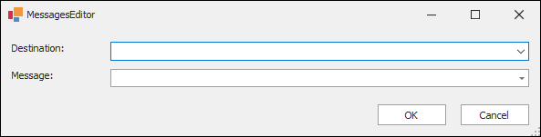
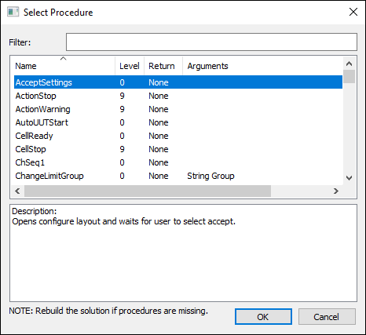

iTest User's Guide
The MessagesEditor is used to define mailslot messages, containing a series of instructions, to any mailslot destination. The MessagesEditor can be accessed in numerous locations throughout AutomationPanel and SolutionBuilder (e.g., through configuring the Button panel's Message On/Off property).
MessagesEditor

The MessagesEditor contains the following fields:
%<ChannelName>%) is supported.The following right-click options are available:
Right-Click Options
| Option | Description |
| Destination Field | |
|---|---|
| Undo | Undoes the last action. |
| Cut | Removes the selected text and copies it to the clipboard. |
| Copy | Copies the selected text to the clipboard. |
| Paste | Pastes the copied text. |
| Delete | Deletes the selected text. |
| Select All | Selects all text in the field. |
| Right to left Reading order | Shifts the text justification in the field from left to right and vice versa. |
| Show Unicode control characters | Displays Unicode control characters. |
| Insert Unicode control character | Opens a drop-down menu of available Unicode control characters. Select one of the available Unicode control characters to insert it into the field. |
| Open IME | Opens/closes IME (i.e., Input Method Editor). |
| Reconversion | This right-click option is not applicable. |
| Message Field | |
| Undo | Undoes the last action. |
| Cut | Removes the selected text and copies it to the clipboard. |
| Copy | Copies the selected text to the clipboard. |
| Paste | Pastes the copied text. |
| Delete | Deletes the selected text. |
| Select All | Selects all text in the field. |
| Select Channel... | Launches the Channel Selection dialog, allowing you to select a channel to use in the mailslot message. |
| Select Procedure... | Launches the Select Procedure dialog, allowing you to select a procedure to use in the mailslot message. For more information, refer to the Selecting Procedures section below. |
You can select a procedure to use in the mailslot message via the Select Procedure... right-click option. This option launches the Select Procedure dialog. From this dialog, select the procedure to use, and then click OK.
Select Procedure Dialog

Column/Field Descriptions
| Column/Field | Description |
| Name | The name of the procedure. |
| Level | The procedure's priority level. |
| Return | The value the argument returns (i.e., Number, String, or None). |
| Arguments | The name of arguments used in the procedure. |
| Description | The description of the selected procedure. This field is blank if a procedure has not been selected. |
Mailslot message reference lists are sorted by destination and can be accessed from the following documents: